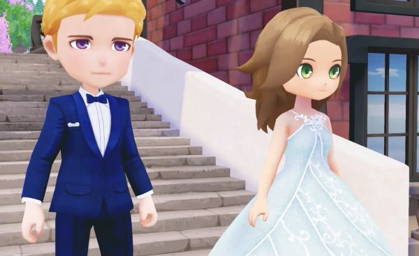

Matrimonio

Como en muchos otros juegos similares, en Story of Seasons: Pioneers of Olive Town puedes tener un romance y casarte con otros personajes de Ciudad Oliva. Al igual que en la vida real, este proceso requiere algo de esfuerzo, paciencia y muchos regalos. Después de casarte también podrás tener hijos. Sigue leyendo para saber cómo casarse en Story of Seasons.
Lo primero es saber quién, de todos los personajes que puedes conocer en Story of Seasons: Pioneers of Olive Town, es capaz de tener un romance contigo y casarse. No olvides que casi todos los habitantes pueden recibir regalos, pero sólo unos cuantos puedes entablar una relación romántica con tu personaje.
enemos 10 solteros y solteras que pueden casarse contigo, 5 chicos y 5 chicas. Por lo tanto, tus opciones son bastantes. Sin embargo, terminar casado con alguien requiere de paciencia y de muchos pasos. Son los siguientes:
- Eleva tu nivel de amistad 10.
- Hacer regalos y hablar a diario con el personaje.
- Remodela tu casa a uno de gran tamaño.
- Compra la cama grande.
- Regalar el colgante de confesión.
- Regalar la pluma azu.
Vamos a explicarlas una por una durante el artículo. En primer lugar, tienes que subir tu nivel de amistad con el personaje deseado, sea quien sea. Si abres la pestaña “Información del residente” pulsando la X, podrás ver tu progreso actual con ellos, en forma de corazones. Cada corazón desbloqueará una escena secreta con el personaje y deberas verlas todas para poder casarte.
Pasos para casarte
Después de alcanzar el nivel 6 de amistad con el personaje con el que quieres casarte en Story of Seasons Pioneers of Olive Town, necesitas ofrecerle un colgante de confesión para admitir tu amor hacia él o ella. Este objeto se puede comprar por 10.000 en la tienda de comestibles. Como con cualquier otro regalo, cuando lo tengas en tu inventario simplemente dáselo a ese personaje en concreto. Se activará una escena y os convertiréis oficialmente en pareja.
Por último, llegamos a la parte en la que tienes que pedirle matrimonio. Esto se hace alcanzando el nivel de amistad 10, y luego dándole una pluma azul. Al igual que el colgante de confesión, sólo tienes que comprar el objeto por 20.000 en la tienda. Además, ten en cuenta que necesitas tener una casa mejorada para proponerle matrimonio a alguien, de lo contrario no podrás darle la pluma azul. Lo cual es de esperar, ya que no puedes formar una familia en una tienda de campaña.
Después de la boda el personaje se mudarán a tu granja y al final acabarás teniendo un pequeño bebé. ¡Buena suerte en la búsqueda de tu alma gemela!